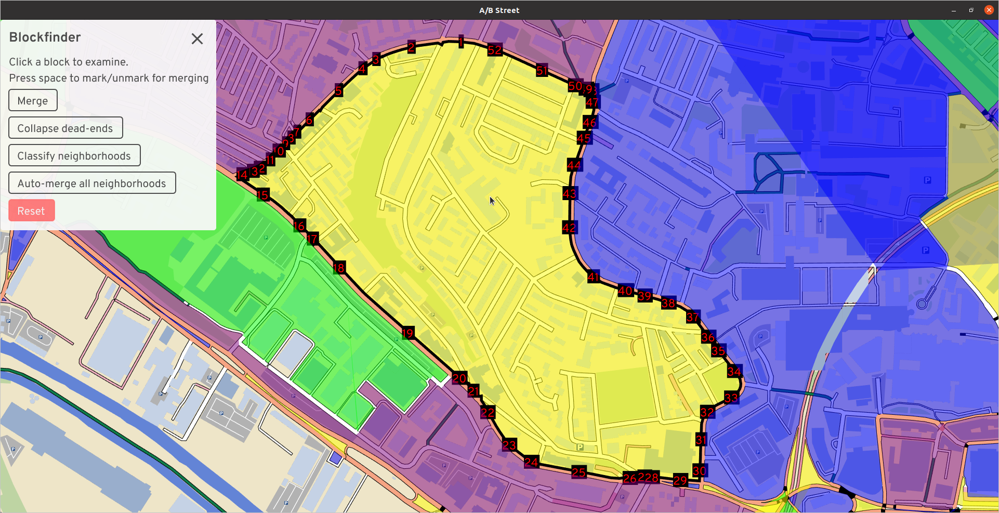
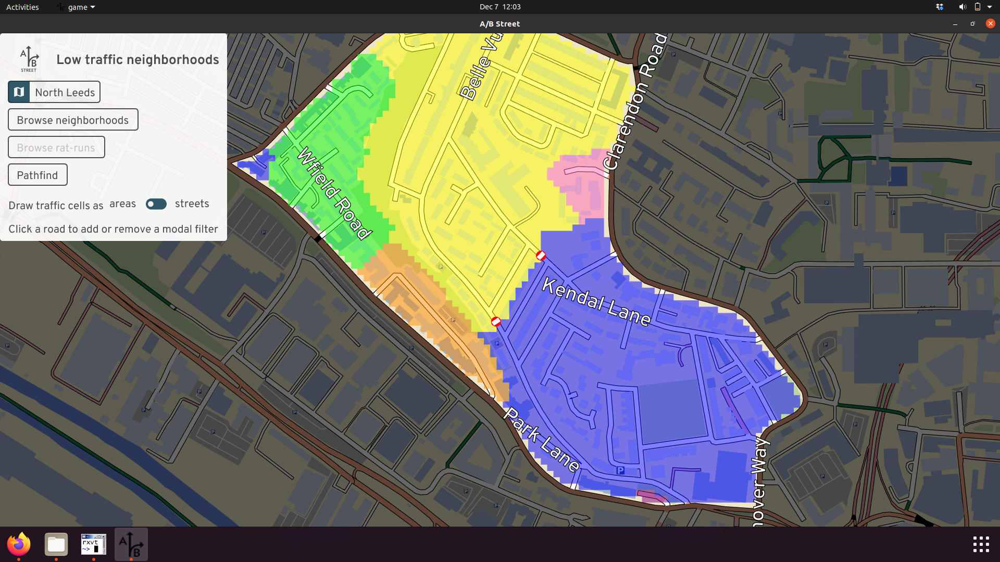
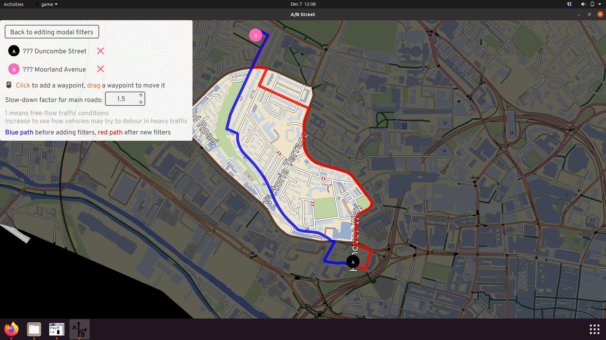

LTN technical details
Since the tool is in such an early stage of development, this is a mix of "how things work currently" and ideas for moving forwards.
Neighborhood selection
The software operates on a single "neighborhood" at a time. This is defined by a perimeter, which is a contiguous sequence of roads that form a loop, without any gaps in the middle. This separates the map into an "interior" and "exterior," with border intersections connecting the two.

Internally, this is built up from individual "city blocks," that trace around an area without ever crossing the street.

Bugs
These underlying blocks have three major bugs currently. Some blocks are missing entirely, because of internal geometry problems trying to trace:

Bridges, tunnels, and train tracks can produce blocks that appear to overlap in 2D space:

And we don't attempt to build blocks near the boundary of the map. If somebody wants to study that area, they should import a new map covering more of the area. We don't know what roads exist just outside the map, so it's not useful to do any analysis.

Next steps
We've heard overwhelming feedback that choosing the boundary of an LTN needs to be much more flexible. Sometimes the software's guesses are flat-out wrong, due to bugs, or improperly including large parks or lakes. Sometimes the major road classifications in OpenStreetMap are inappropriate. And often, there are parties interested in more ambitious schemes to "merge" two LTNs or create large ones. We don't want the software to be prescriptive at all in this selection of boundary road; people know best. So the plan is to allow for drawing custom boundaries. To speed things up, we can also improve the built-in heuristics for partitioning neighborhoods and let people select which OpenStreetMap highway types should count as a "major" road.
Cell connectivity
After picking a neighborhood, the tool groups all of the interior streets by connectivity for motor vehicles. Within each "cell," a driver can reach all streets without using a perimeter road. How does this work? Start from any interior street, and "flood" out from that start position to find all reachable streets. Don't search past perimeter roads. That's a cell. Repeat until all interior streets have been visited. The reachability is based on motor vehicle constraints, so streets classified as pedestrian- or bike-only and new modal filters can't be crossed.
Initially, a neighborhood might be split into a few cells:

That blue cell is quite large, so drivers may be tempted to cut through to avoid queues along the perimeter. Let's add a filter to stop them:

The cells didn't change, because there's a parallel street that's still open. Adding a filter to just one street might not work -- drivers can just detour to the other option. Let's fix that.

Now the blue cell is split into a yellow piece; the two aren't connected anymore. The scheme is now "water-tight."
The cells are visualized as colored areas, inspired by many example LTN diagrams floating around. But if that's confusing, you can just color the cells by street instead:

The colors aren't meaningful; they're just meant to show different cells. There may be cases when two adjacent cells have the same color, but they're not connected -- that's just a bug we're working on.
Routing
There's a pathfinding tool to see how driving routes will interact with a neighborhood. The pathfinding itself performs a standard graph search, respecting any turn and lane restrictions defined in OpenStreetMap. The cost function, expressed in units of duration, is the distance divided by the speed limit. For drivers, there's just one extra penalty that normally applies -- unprotected right turns (in the UK) from a smaller to a larger road. This penalty is fixed at 30 seconds currently.
According to this cost function, often the optimal route for a driver doesn't even pass through a neighborhood. Major roads tend to have higher speed limits in OpenStreetMap, so their cost is lower. This may not match reality -- during peak hours, main roads might have long queues, and a driver armed with satnav could try to cut through a neighborhood. So there's a toggleable slowdown factor for main roads, which just multiplies the cost.
Here's an example of the results. With a slowdown factor of 1.5x, the blue route shows that drivers might try to cut through this neighborhood. After we add some modal filters, the blue route becomes impossible, and the driver is likely to try the red route instead -- which actually cuts through the neighborhood on the north end, because we haven't added filters there.
